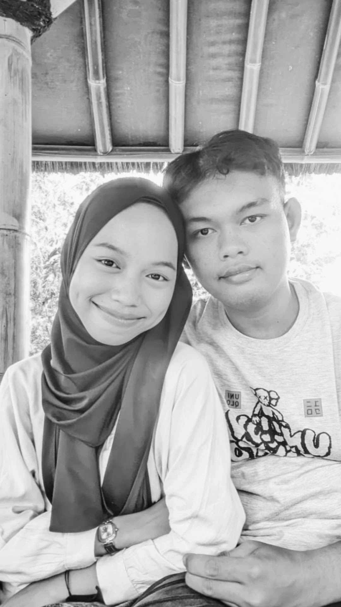

Bagi dunia, Karawang mungkin dikenal sebagai "Kota Lumbung Padi" yang hamparan sawah hijaunya membentang luas menyejukkan mata, atau sebuah megapolitan baru yang bergerak cepat dengan deretan kawasan industri terbesarnya di Jawa Barat. Karawang adalah simbol kemajuan ekonomi dan modernisasi yang kokoh. Namun, bagi lembaran kisah hidup saya, Karawang memiliki arti yang jauh lebih romantis dan mendalam. Kota ini bukan sekadar titik di peta Wonderful West Java, melainkan kota saksi bisu di mana perjuangan cinta saya benar-benar dimulai. Karawang adalah tempat di mana jarak mengalah pada rindu, dan tempat di mana langkah kaki saya pertama kali berani melaju demi menemui sosok yang paling berharga. Saya akan selalu ingat hari itu. Hari di mana saya memutuskan untuk menempuh perjalanan, meninggalkan kenyamanan rumah, hanya untuk menyambangi dirinya yang sedang bermain di Karawang. Ada debar yang tak biasa sepanjang rute jalan menuju kota ini. Seperti judul sejarahnya sebagai "Kota Pangkal Perjuangan", hari itu saya benar-benar merasakan arti berjuang—bukan melawan musuh, melainkan berjuang melawan jarak demi sebuah temu yang dinanti. Setiap kilometer jalan raya yang saya lewati, setiap kepulan angin sore Karawang, hingga hiruk-pikuk kotanya seolah menjadi latar belakang musik yang mengiringi langkah nekat penuh cinta ini. Saat roda kendaraan terus berputar, di kepala saya hanya ada satu tujuan: melihat senyumnya secara langsung di kota ini. Ketika akhirnya kami bertemu di tanah Karawang, kota ini seketika berubah wujud. Karawang yang awalnya terasa asing bagi saya, tiba-tiba menjelma menjadi tempat yang paling hangat dan penuh magis. Sudut-sudut kota, tempat nongkrong, hingga jalanan yang kami lalui bersama hari itu tidak lagi menjadi tempat yang biasa. Semuanya otomatis terekam sebagai prasasti penanda bahwa di kota inilah, rindu kami pernah menang. Angin Karawang yang berhembus di antara modernisasi kota dan hijaunya alam seolah berbisik, merestui dua orang yang sedang keras kepala merajut masa depan bersama. Karawang telah mengajarkan saya bahwa keindahan sejati sebuah destinasi tidak hanya terletak pada objek wisatanya yang megah, melainkan pada memori indah yang kita tinggalkan di sana. Di bawah langit Karawang yang dinamis, sebuah babak baru dalam cerita cinta kami telah resmi ditulis dengan tinta yang tak akan luntur oleh waktu. Ini adalah Karawang versi saya—kota industri yang berhati lembut, tempat perjuangan awal saya menyambangi kebahagiaan, dan sebuah sudut Wonderful West Java yang akan selalu menempati ruang paling romantis di dalam ingatan kami berdua.